BlueNova Backend Theme
A modern Odoo 19 Community backend experience
BlueNova modernizes the Odoo web client with a persistent app sidebar, an instant light/dark mode, a KPI landing dashboard, a card-based interface, a floating chat panel built on Discuss, a themed login flow, and a Settings screen that recolours the entire backend — with no SCSS edit and no asset rebuild. Your Odoo apps, views and access rules keep working exactly as they do today.

Product highlights
Six things BlueNova changes
Each one is a real component or stylesheet in the module — nothing here is a mock-up, and nothing replaces an Odoo view.
Modern Dashboard
An OWL client action with gradient hero cards, metric cards with seven-day sparklines, a 30-day column chart, a recent-activity feed, quick actions and a preview of your own open work — built from whichever apps you have installed.
Modern Navigation
A persistent app rail replaces Odoo's apps dropdown — every app you can reach, always visible, with 62 bundled single-colour icons and the current app marked by an accent spine.
Instant Light / Dark
One attribute on <html> flips the whole palette — no
server round-trip, no second bundle, no page reload. It is what gives Odoo 19
Community a working dark scheme at all.
Chat & Communication
A floating panel on the dashboard listing your pinned Discuss conversations, opening any of them in place with real messages and a working composer. Requires the Discuss app.
Smart Cards
Hero, metric, activity, chart, quick-action, preview, chat and kanban cards — every one built from the same design tokens, so all of them follow the colour you pick, in both schemes.
Responsive Experience
Explicit rules for wide screens, tablet, phone, short landscape viewports, touch pointers, reduced motion and print — on Bootstrap's breakpoints, the ones Odoo 19 itself uses.
#3959b0
Ocean Blue #0284c7
Night canvas #0b1120
— all three fully repaintable from Settings
Dashboard
A landing page that knows what you installed
The bluenova_dashboard client action gets its own entry in the app rail,
and can optionally be the page you land on right after login. One RPC builds the whole
page; every region degrades on its own.
What is on the page
- Hero cards — the two largest figures on a brand gradient, with a 30-day-vs-previous-30-day trend line
- Metric cards — opportunities, quotations, RFQs, posted invoices, open tasks, transfers and employees, each with a seven-day sparkline
- IN / OUT pills on Transfers, split by picking type
- Trend chart — a column per day over 30 days, one app at a time, with chips to switch and a tooltip per column
- Recent activity — the newest records across everything you can read; a row opens that record
- Quick actions — “New …” shortcuts, one per model you may create
- Preview — your own open tasks, falling back to your pipeline, then your quotations
Why the numbers are trustworthy
- Counted as you, never with
sudo()— record rules apply exactly as they do in the underlying list view - A card is dropped silently if its app is not installed or you cannot read it — never rendered empty or broken
- A trend with no baseline shows nothing, not “+0.0%”
- History is counted against a separate domain, so a quotation confirmed since it was written stays in the week it belongs to — charts do not sag and trends do not report phantom growth
- The chart is hand-rolled CSS geometry, not a charting library — no npm package, no CDN, no extra payload
- Clicking anything hands over to that app's own Odoo action
Communication
A chat panel that actually sends messages
A round button pinned to the corner of the dashboard opens a card with two views: your conversation list, and one conversation with its composer.
What it does
- Conversation list — the channels you have pinned in Discuss, in the same order, with the last message, relative time and unread count
- Message area — recent messages with authors, avatars and self/other bubble sides
- Working composer — Enter sends, Shift+Enter breaks the line; OdooBot answers in the same round trip
- Live updates — new messages arrive over the bus while the panel is open
- Opening a conversation marks it read, exactly as Discuss does
- Open Discuss hands over to the real client, on the conversation you were reading
What it is not
- No attachments, mentions, reactions, message editing, sub-threads or typing indicators — those are Discuss, one click away
- It is not a replacement for the Discuss app, and not a second
messaging backend — it reads and writes the same
discuss.channeldata - Posting is gated on your own channel membership, asked as you — the same check Discuss's own controllers run
web and base_setup, and reaches everything mail-shaped by name
at runtime rather than by import, so a missing Discuss costs one feature instead of
taking the whole backend bundle down.
Card system
One primitive, used consistently
Cards are how BlueNova presents information. Each type below is a real component or
stylesheet in the module, and all of them read the same --cmt-* design
tokens — so a colour picked once in Settings moves every one of them, in light and
dark mode alike.
KPI & hero cards
Brand-gradient cards carrying the two largest figures, an app glyph, a label chip and a trend line.
Metric cards
Masked app icon, label, figure, seven-day sparkline, and either IN/OUT pills or a subtitle.
Activity cards
The newest records across your apps — icon, what it was, how long ago. A row opens the record.
Chart panel
Series chips, a running total, gridlines with labelled ticks, day columns with hover tooltips.
Quick-action & preview cards
“New …” shortcuts for what you may create, and a short list of your own open work.
Chat, workspace & kanban cards
The chat panel, the sidebar's company/database header, and a glassmorphic restyle of Odoo's own kanban card with an accent spine.
Calendar
Odoo's calendar, properly themed
Odoo 19's calendar view is a FullCalendar v6 renderer, and BlueNova leaves it in place. What the theme contributes is the styling that view has always been missing on Community — particularly in dark mode, where an untreated calendar is a wall of white.
What the theme restyles
- The FullCalendar v6 palette is remapped at the source through its own
--fc-*custom properties — page background, borders, neutral fills, the highlight wash, non-business hours, the “+N more” link and the now-indicator - Surfaces that ignore those properties are restated by hand: the all-day strip, disabled and weekend cells, week numbers, the time-grid divider, column headers, list-view rows and the popover
- Brand colour reaches the dropdown option, the “+N more” link, the month/year toggle, and the ghost event and drag mirror while an event is being moved
- The calendar sidebar and its cells follow a Background colour picked in Settings
What is unchanged
- Odoo's own day / week / month / year scales, filters, drag-and-drop and quick-create all behave exactly as they do without the theme
- No calendar view, component or action is added or replaced
- Your calendar records, models and access rules are untouched
Settings → Theme Settings
Recolour the whole backend from the UI
No SCSS edit, no asset rebuild, no server restart. Changes apply on save, and the saved palette is rendered into the page head on every load — straight from configuration, after the compiled bundle, so it always wins.
Primary moves the whole brand
Not one token — hover and pressed fills, the active-row wash, focus rings, the sidebar icon tints, the hero gradients, and Bootstrap's own primary and link colours. All derived in HSL so the hue holds and the ramp stays coordinated for any brand you pick.
Background moves the neutrals
Surfaces, hairlines, scrollbars and ink all re-derive from the canvas you choose — and the ramp flips direction on a dark pick, so choosing a near-black canvas for light mode turns the ink light with it.
Presets & safety
Export the palette as JSON, re-import it later (validated field by field), or reset to the compiled defaults. Every colour is checked against a strict pattern on save and again before it is rendered.
Beyond the backend
Themed login, signup and public pages
Authentication pages
- Login, signup and reset-password pick up the same palette, in light and dark mode
- Optional brand logo, tagline and background image (separate light and dark), all set from Settings
- They keep that styling once the Website app is installed, which would otherwise replace the layout entirely
Optional public home page
- A themed page at
/for anonymous visitors, with configurable hero typography - Off by default — changing what
/serves on a running instance is not a theming decision - It stands down automatically when the Website app is installed, since
that app owns
/properly - No drag-and-drop editing; it renders your company's own data plus the Settings tagline
Compatibility
Built for Odoo 19 Community
BlueNova is a theme, not a fork. It layers onto the standard Odoo 19 web client through
supported extension points only — asset bundles, QWeb template inheritance,
prototype patches, a model _inherit and a controller subclass. No Odoo core
file is modified.
Your Odoo keeps working
- Standard list, form, kanban, calendar, pivot and graph views are Odoo's own, rendered by Odoo's own code
- The app rail is built from Odoo's own menu service, so it shows exactly the apps Odoo would
- Every count and read runs as the current user — access rights and record rules apply unchanged
- No field is added to any business model, and no table is created
- Uninstall and the backend returns to stock Odoo immediately — no data is touched
Written for 19 specifically
- OWL client actions in the
actionsregistry, not legacyAbstractActions - Path-based web client routing (
/odoo/action-42), not the hash fragment has_access, not the API deprecated in 18.0- FullCalendar v6 selectors and custom properties, not v4's
- Assets declared in the manifest, not as XML bundle templates
web and
base_setup alone — but Enterprise has not been verified, so no
Enterprise claim is made here. Odoo versions other than 19.0 are not supported.
Under the hood
Built with Odoo's modern web architecture
Only what the module actually uses — there is no npm package, no CDN request and no charting library anywhere in it.
OWL 2 components
HomeDashboard, AppsSidebar and
ChatLauncher — with useState,
useService, useEffect, useRef and
module-level reactive() stores.
XML / QWeb
Component templates, plus t-inherit extensions of
web.WebClient and web.NavBar that add the rail and its
toggle without touching core markup.
Odoo asset bundles
A prepend into web._assets_primary_variables, appends into
web.assets_backend and web.assets_frontend — in a
load order the manifest documents and depends on.
SCSS design tokens
One --cmt-* custom-property set drives every colour, radius, shadow
and font, with a dark scheme keyed on a single attribute.
Python / ORM
An AbstractModel for the dashboard and chat RPCs, a
res.config.settings inherit, a transient import wizard, and HSL
colour maths in the standard library.
Bundled assets only
Inter and Poppins as latin-subset woff2, 62 app icons, and a
hand-rolled CSS chart — so the backend works offline and under a strict
CSP.
Preview
Screenshots
Every screen below is shown twice — once in each colour scheme. Both are hand-built palettes rather than an inverted filter, which is the difference the pairs are here to show.
Dashboard
Gradient hero cards with a 30-day trend, metric cards with sparklines, the column chart and the activity feed — built from whichever apps are installed.
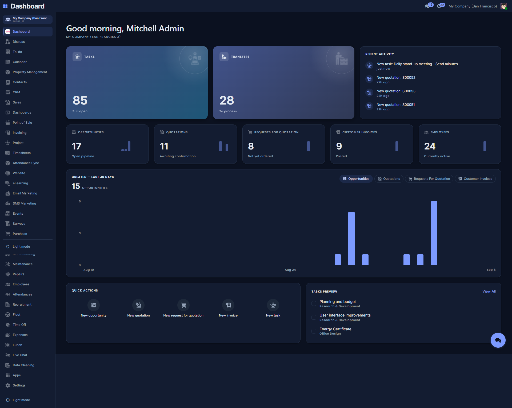
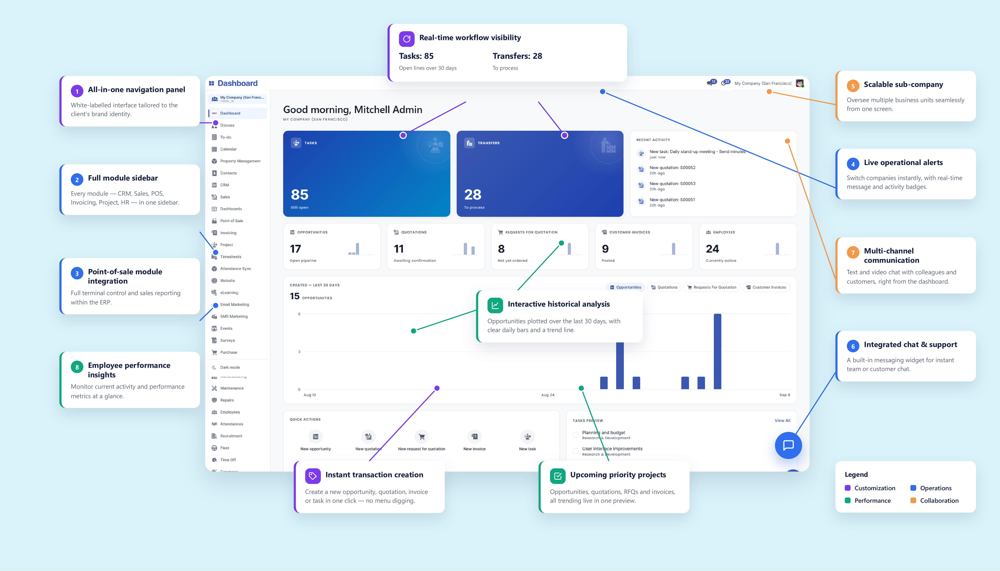
Theme Settings
Settings → Theme Settings. Picking one Primary moves the whole brand family; picking a Background moves the whole neutral ramp. Capped here — the real page runs longer.
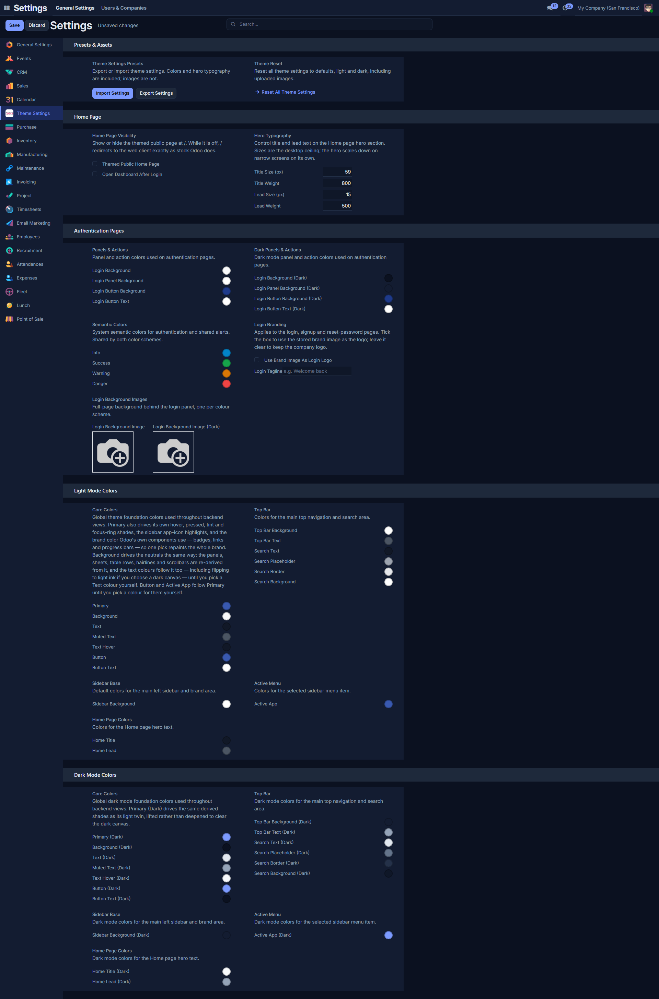
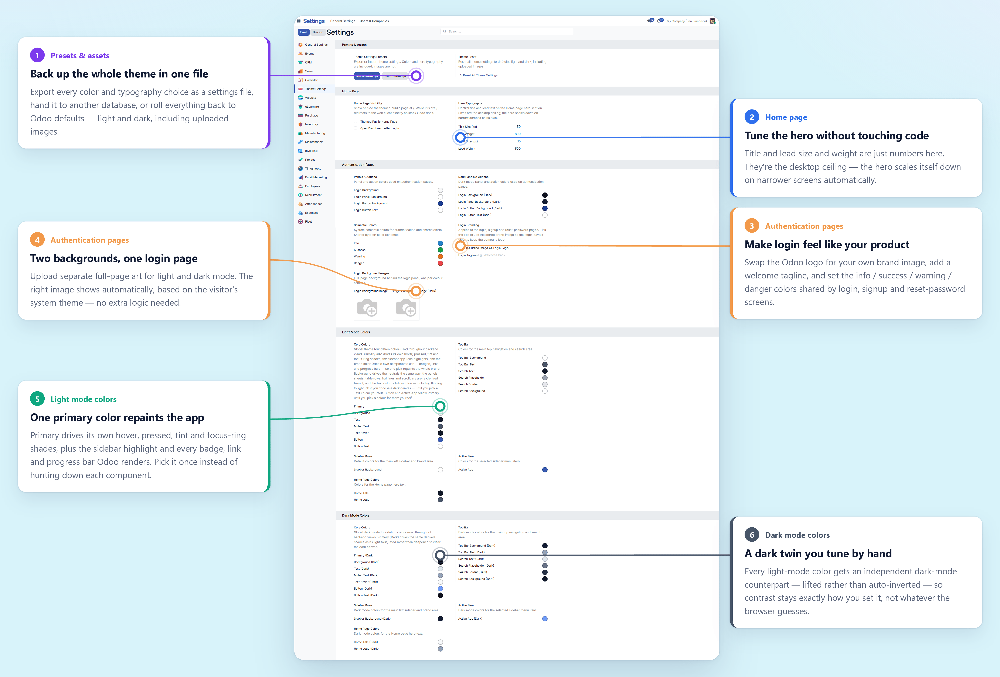
Kanban — CRM pipeline
Column headers, progress bars and card surfaces, with the persistent app rail down the left.
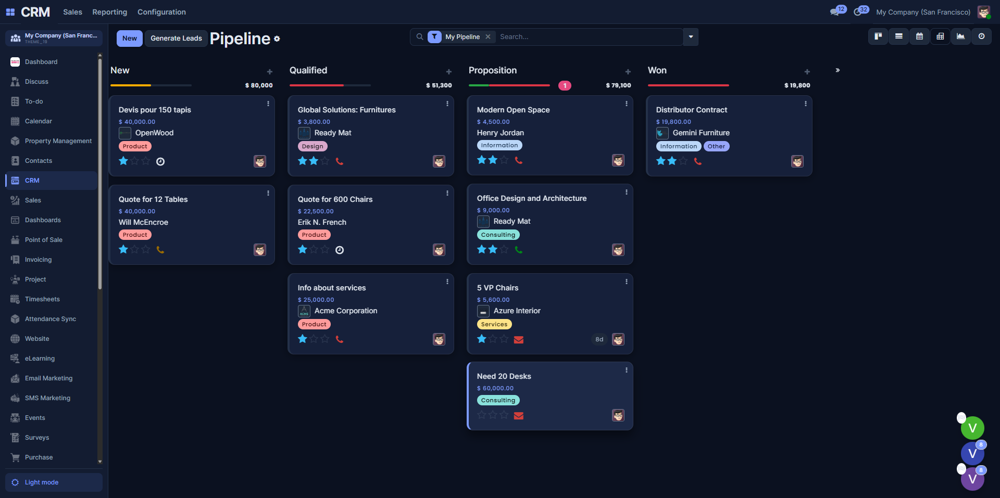
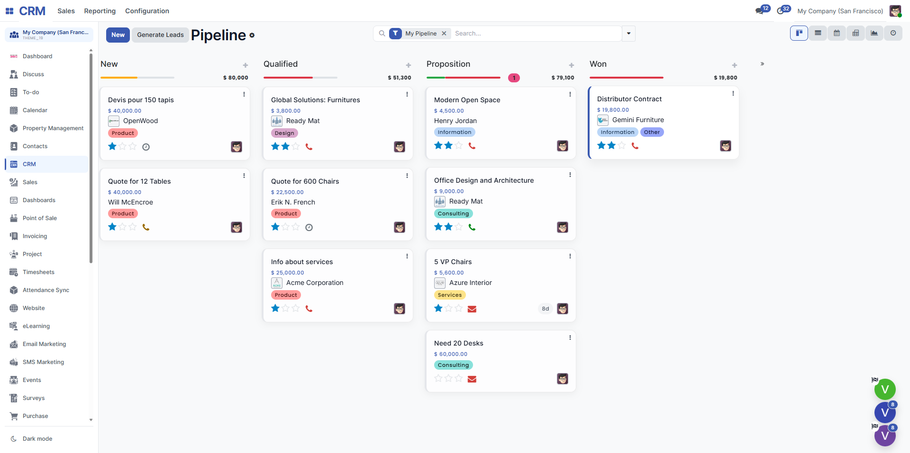
List view — Employees
The screen people actually spend the day in: table rows, the search panel, the control panel and the pager.
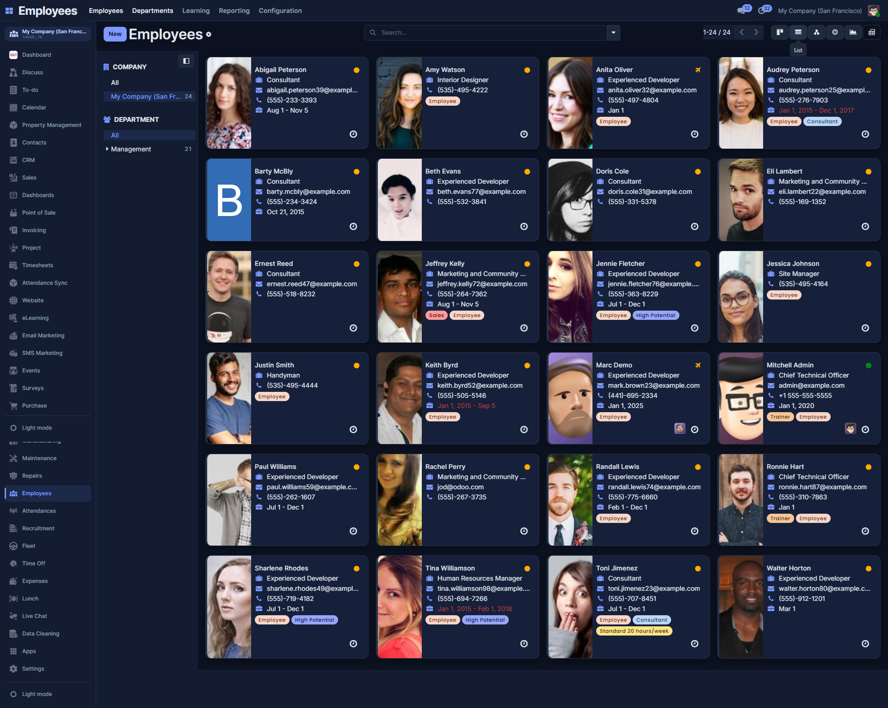
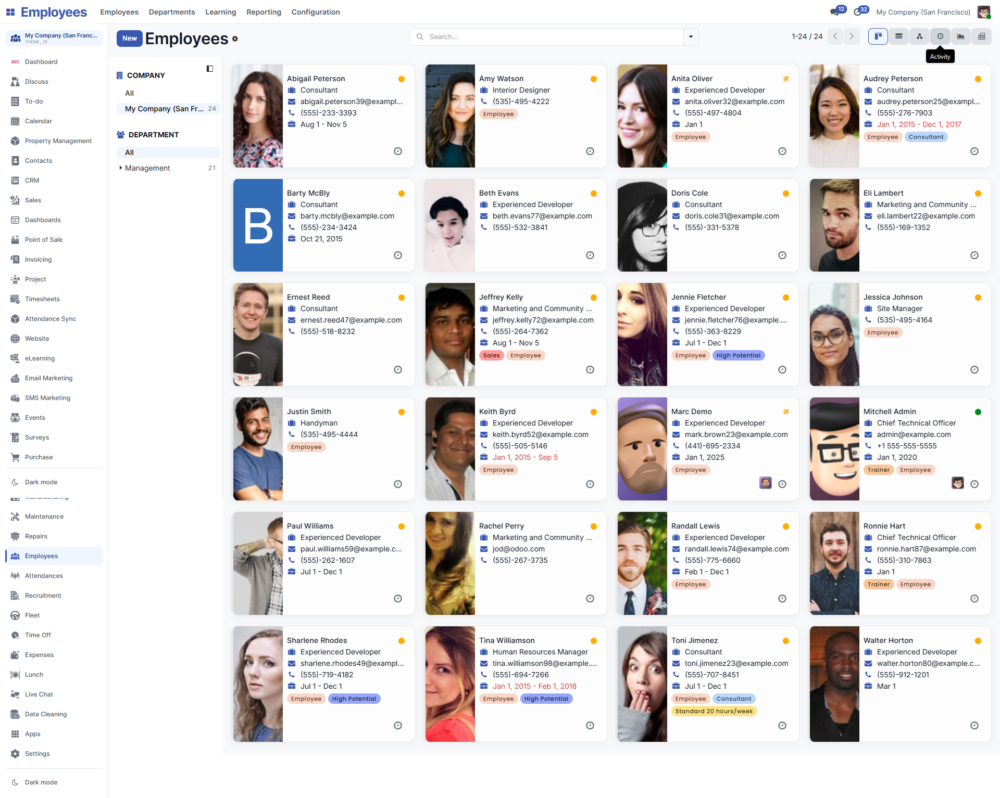
Form view
A new record: the sheet, the status bar, notebook headers and input styling.
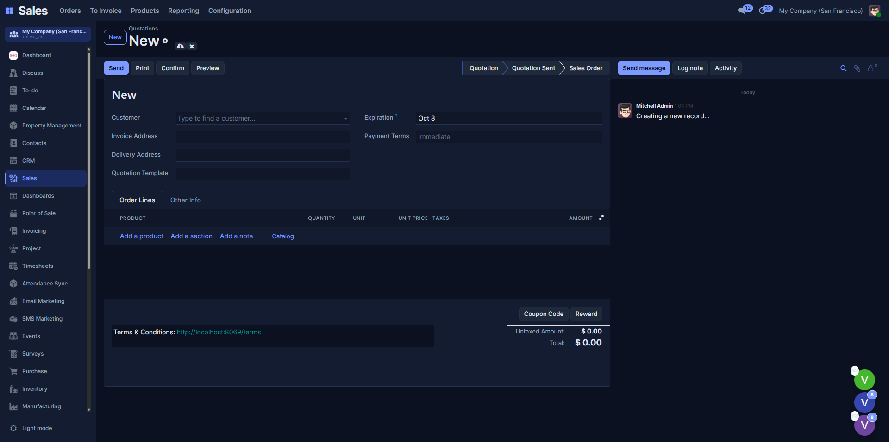
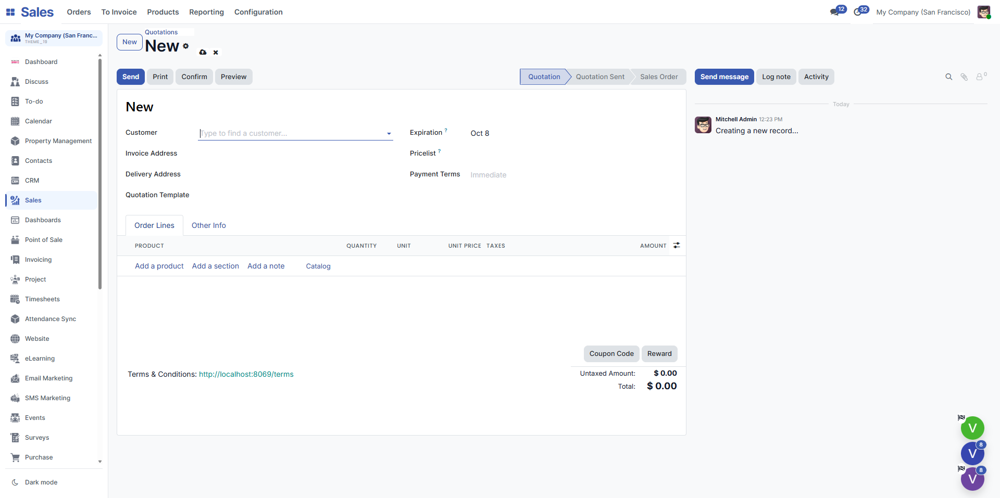
Login — with a background image
The background image, logo and tagline are all set from Theme Settings. Light and dark each take their own image.
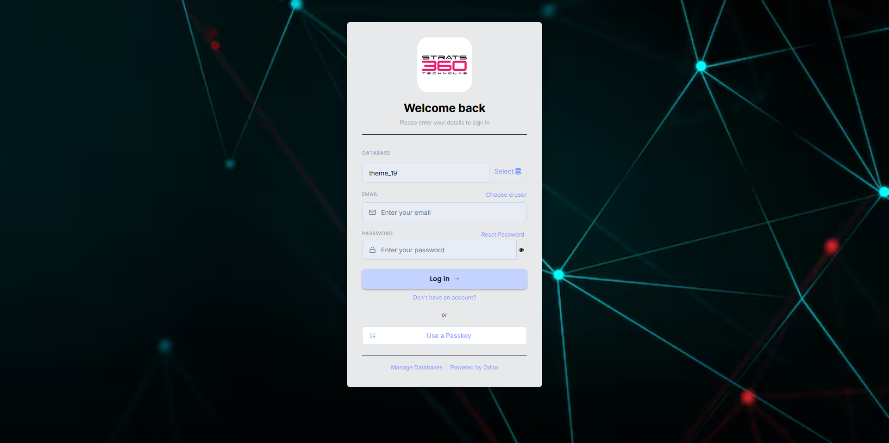
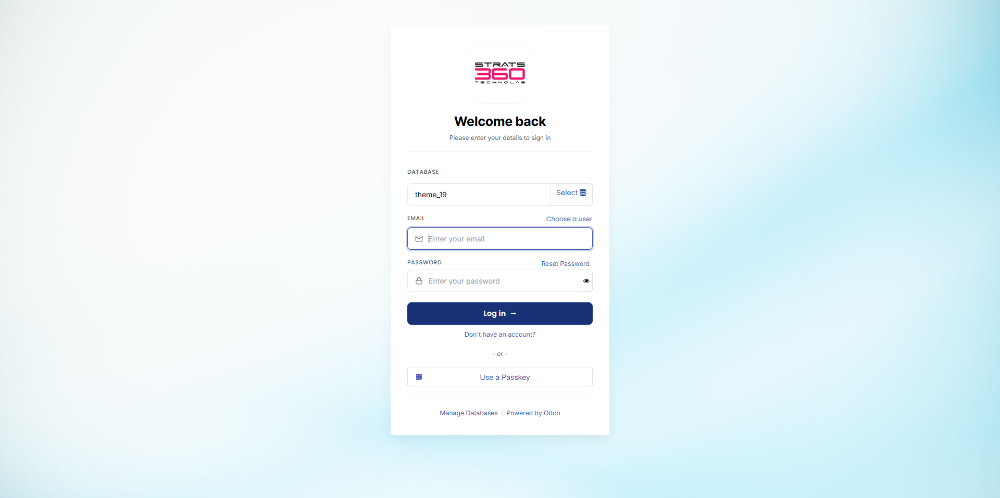
Login — plain
The same page with no background image uploaded, which is how it looks the moment the module is installed.
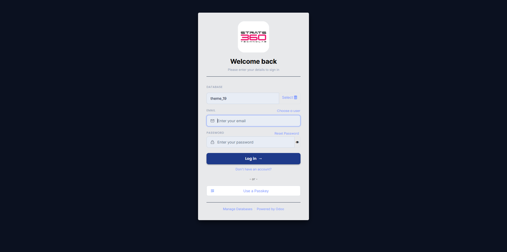
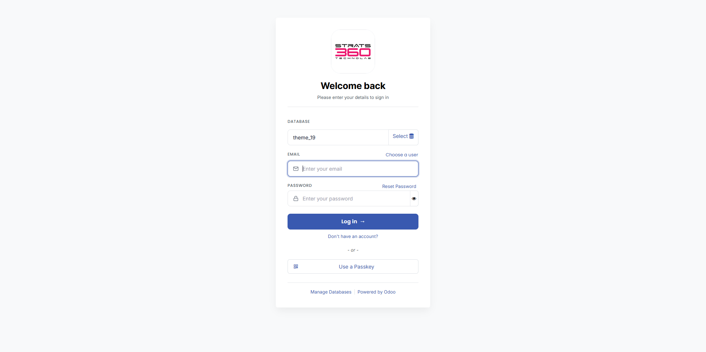
Getting started
Requirements & installation
| Odoo | 19.0 |
|---|---|
| Edition | Community Edition |
| Technical name | bluenova_backend_theme |
| Depends | web, base_setup |
| Python packages | None — standard library only |
| Frontend packages | None — no npm, no CDN, no external font |
| Optional at runtime | Discuss (chat panel); CRM, Sales, Purchase, Invoicing, Project,
Inventory, Employees (dashboard tiles); Website (changes login and
/ behaviour). Each is guarded — absent means the
feature is absent, never broken. |
| Stored business data | None — no new models or tables |
| License | OPL-1 (Odoo Proprietary License v1.0) |
Installation
- Copy the module into an addons directory, keeping the folder name
bluenova_backend_theme. - Make sure that directory is in your
addons_path, then restart the Odoo service. - Enable Developer Mode, if you need it to reach Update Apps List.
- Apps → Update Apps List.
- Search for BlueNova Backend Theme.
- Activate it. It never installs itself.
- Hard-refresh the backend so the new bundle is fetched.
Then open Settings → Theme Settings to recolour, upload a brand image, or turn on the landing dashboard.
Honest limits
What BlueNova does not do
Stated up front, so nothing on this page needs a footnote.
- No custom calendar view. The calendar work is styling of Odoo's own FullCalendar v6 renderer.
- The chat panel needs Discuss, and is not a full Discuss client — no attachments, mentions, reactions, editing or typing indicators.
- Graph views stay light on purpose. Odoo draws chart axis labels from JS using a colour Community pins to “light” server-side, so a dark panel would mean near-black text on a near-black background.
- Dark mode is not exhaustive. It covers this theme's surfaces plus the main list / form / kanban / calendar / dialog chrome; some reports, iframes and third-party widgets can still show light patches.
- Odoo's slide-in app menu on small screens is left as-is, and the rail
steps aside for it below the
mdbreakpoint. - No CRM-specific pipeline banner. CRM kanban boards get the theme's
general card styling, not a bespoke stats header — that would make the
theme hard-depend on
crm. - The public home page has no drag-and-drop editing. Anything richer is what the Website app is for.
- No fixed bottom footer bar and no floating action button.
Support
Getting help
Support is handled by email, by the team that wrote the module.
How to reach us
Write to nirav@wewant360.com — the same address listed on this module's Odoo Apps Store page. You can also use the Contact author button on that page, which reaches the same inbox.
Purchasing this module includes support for the issues below at no extra charge. Custom development, migrations to other Odoo versions and integration work are quoted separately.
What to include
- Your Odoo version and edition (this module targets 19.0 Community).
- The module version from the Apps screen.
- What you did, what you expected, and what happened instead.
- Any red errors from the browser console, and the matching lines from the Odoo server log.
- A screenshot, where the problem is visual.
Covered
Installation problems, errors raised by this module, styling that breaks a standard Odoo screen, and anything on this page that does not behave as described.
Not covered
Faults in Odoo itself or in other vendors' modules, server and hosting administration, and conflicts caused by a third-party module that also restyles the backend.
Before you write
Try the module on a database with only BlueNova installed. If the problem disappears, another backend theme or web module is competing with it, and naming that module lets us fix the conflict far faster.